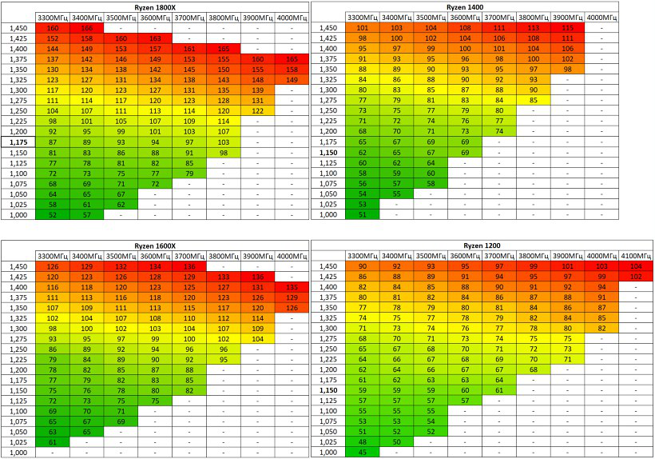

Recomended:
3.7 GHz
1.2875 V
В моем случае не хочет брать больше 3.8 ггц, хотя кто-то там 4.1 берёт.
Две абсолютно одинаковые системы собрал, одна стабильно заводится и работает на 4,0 вторая на 3,8.
Свободный разгон, в моём случае 4 Ггц при 1,38 вольта. Температуры в разгоне под недорогой башней - не выше 64 градусов в стресс-тестах.
Стабильные 3.9 Ггц на asrock ab350m hdv, под нагрузкой 52-55 градусов в стресс тесте на deepcol iceblade 100.
Cтабильно работает в разгоне без поднятия вольтаж до 3.7. Ну а далее черные экраны в стресс тестах. приходится поднимать напряжение до 1,3875 после чего ведет себя стабильно, но требует охлаждения.
Разогнал до 3.9GHz, 1.35v, неплохой компромис, но можно лучше. Температура в играх с кулером IceBlade 100 примерно 60-62°.
Базовая частота 3.1 двумя кликами в биосе поднимается до 3.5 на штатном кулере из коробки.
3800 мгц / 1.3в. 70 г в стресс тесте prime95 на боксе. В играх максимум 60 градусов.
Для интереса пробовал разгон, берет стабильные 3.85
Возможность разогнать до 3800 без танцев с бубном.
Процессор без пробелов гонится до 3.8 ГГц, запускается на 3.9 , но тест на стабильность linx не проходит.
Разогнал проц до 3.7 на боксовом кулере (гонится и выше,но меня не устраивают температуры).
Брал с AMD оперативкой 2 х 4г на 2400, разогнал сразу с первого раза до 3200, а проц поставил пока на 3.7. Потом попробую больше. Система прошла тест.
Взял память крушел 16 гигов, разогнал на 3200 и полет норм. Проц тоже разогнал до 3,8 ГГц.
Свободный разгон, в моём случае 4 Ггц при 1,38 вольта. Температуры в разгоне под недорогой башней - не выше 64 градусов в стресс-тестах.

Методы разгона процессора:
Существует два основных метода разгона CPU:
1. Повышение частоты системной шины (FSB) (повышение частоты тактового генератора BCLK).
2. Повышение частоты процессора увеличением коэффициента умножения (множителя). Наиболее простой и эффективный метод.
2.1. Повышение частоты процессора с использованием программ из под Windows (AMD RYZEN MASTER).
2.2. Повышение частоты процессора через множитель в BIOS. (Частота процессора жестко зафиксирована и не меняется в процессе работы)
2.3. Повышение частоты процессора с использованием функции P-state в BIOS. (Частота процессора регулируется автоматически в зависимости от нагрузки)
Модули памяти DDR4 выпускаются:
- в OEM версии определяются и работают на частоте 2133 МГц (без заводского разгона, XMP профиль отсутствует);
- модули c заводским разгоном, XMP профилем на заданную частоту с предустановленными таймингами. Профилей XMP (DOCP) может быть несколько. На заявленных частотах память начинает работать только при их активации в BIOS. До этого она будет работать на "стандартной" частоте (как правило, 2133МГц), гарантирующей стабильный старт системы.
Внимание: XMP - eXtreme Memory Profiles ("экстремальные профили памяти". Поддержка профиля XMP не является отраслевым стандартом, ни АМД, ни другие вендоры (кроме Intel) не обязаны поддерживать такие расширения. XMP дополнительный профиль разгона, протестированный и одобренный Intel. И никто не давал гарантии, что XMP-профиль должен работать на таких частотах с платформой AMD. Asus использует DOCP – это аналог XMP.
В настоящий момент лучшим образом для разгона подходят комплекты одноранговой оперативной памяти с установленными чипами Samsung B-die (похуже гонится память на чипах C-die и E-die). В режиме XMP (DOCP), запускается одноранковая на частотах до 3200 МГц, двуранковая до 2933 МГц.
Память на чипах Hynix, в режиме XMP (DOCP), запускается одноранковая на частотах до 2933 МГц, двуранковая до 2666 МГц (при условии BIOS не ниже AGESA 1.0.0.6)
Утилиты для просмотра информации о комплектующих: CPU-Z, AIDA64, Thaiphoon Burner (оперативная память) или аналог.
Отдельно для проверки памяти рекомендуется использовать MemTest86.
Утилита для оценки производительности системы Cinebench R15 или аналог.
Тесты стабильности LinX, OCCT, Prime95 или аналог.
CPU Core Voltage
Напряжения ядер процессора. Могут быть установлены режимы (Auto/Manual/Offset mode). AMD настоятельно рекомендует не превышать значения 1,45V. Для долгосрочного разгона AMD рекомендует максимальное напряжение 1,35 V.
Режим Auto - для работы процессора в штатном режиме.
Режим Manual - для ручного разгона процессора с помощью множителя (CPU Core Ration) или с помощью поднятия частоты для шины (BCLK).
Режим Offset mode - для разгона через P-state. Поднимая напряжение через offset, оно будет динамически изменяться в зависимости от нагрузки.
CPU Load-line Calibration (LLC)
Компенсатор просадки напряжения процессора при повышенной вычислительной нагрузке. Имеется в BIOS не на всех материнских платах.
Пример: зависимости просадки напряжения процессора в зависимости от уровня LLC Asus Prime X370 Pro в тесте в Prime95 при заданном напряжении процессора 1.25V:
LLC 1: Vcore min- 1.194V;
LLC 2: Vcore min- 1.206V;
LLC 3: Vcore min- 1.231V;
LLC 4: Vcore min- 1.237V;
LLC 5: Vcore min- 1.250V;
LLC auto: Vcore min- 1.200V.
Рекомендуемое значение: Базовые частоты и разгон до 3,6 ГГц - Level 1 или Auto, для умеренного разгона 3,6-3,7 ГГц - Level 2 или Auto, для 3,8ГГц - Level 3, для 3,9-4,0 ГГц - Level 4 – 5.
Эти уровни компенсации аналогичны и для Soc Load-line Calibration. (Для разгона оперативной памяти)
Внимание: уровни LLC Level 3 – 5 повышают нагрев системы питания процессора (VRM) материнской платы.
CPU Current Capability
Система ограничения по току для процессора.
100-110% разгон до 3,6 ГГц;
120-130% разгон до 3,9 ГГц;
130-140% разгон свыше 3,9 ГГц.
СPU Power Phase Control и CPU Power Duty Control
Управление фазами питания. Чем больше фаз задействовано, тем стабильнее подача напряжения на процессор.
Разгон до 3,8 ГГц включительно режим авто/стандарт/оптимизированный;
Разгон свыше 3,8 ГГц режим экстрим.
Внимание: режим фаз экстрим влечет за собой повышенный нагрев системы питания процессора (VRM) материнской платы. Максимальная допустимая температура для повседневного разгона до 90 градусов. Максимально критический уровень – 120 градусов.
CPU VRM Switching Frequency
Отвечает за скорость отклика системы питания. Значения 300; 400; 500kHz.
Разгон до 3,8 ГГц включительно - 300kHz.
Разгон 3,9 ГГц и выше - 400kHz.